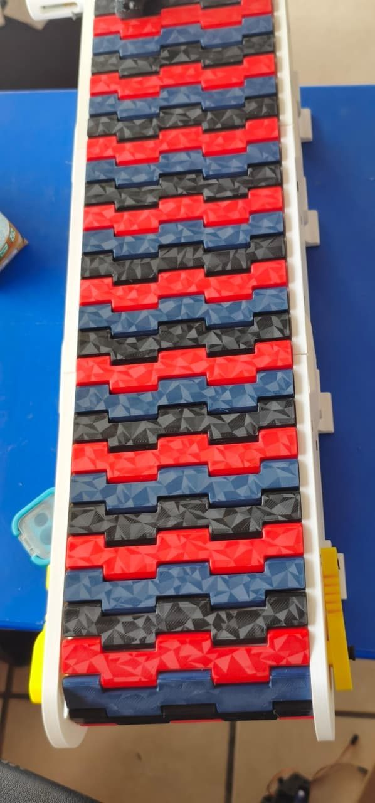
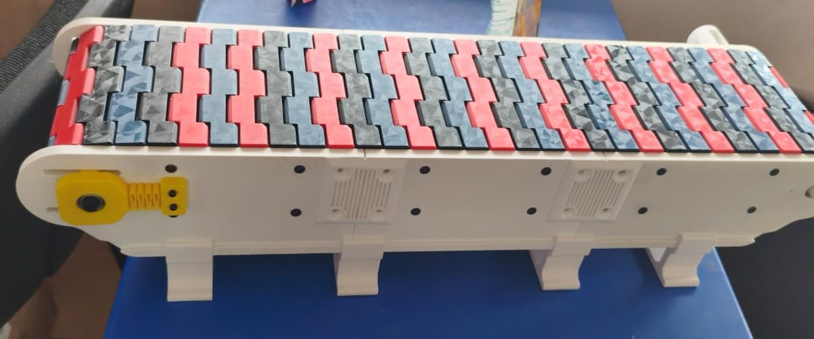
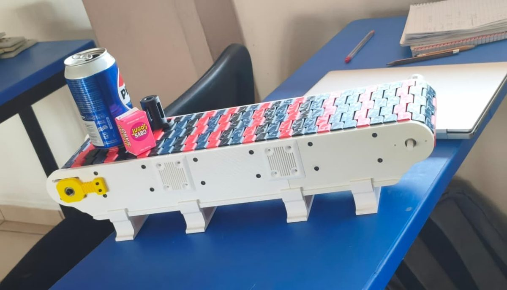
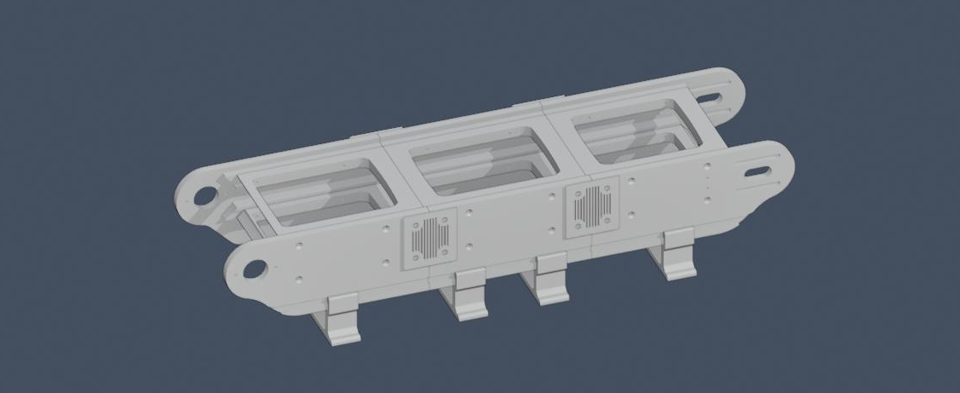
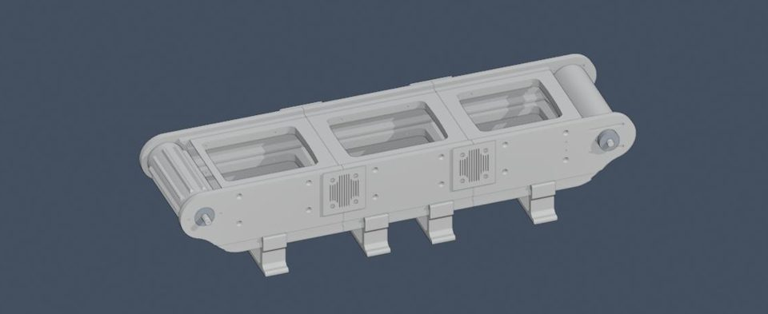
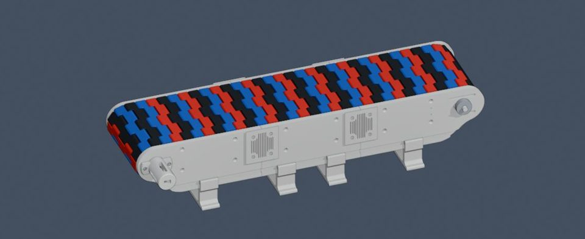
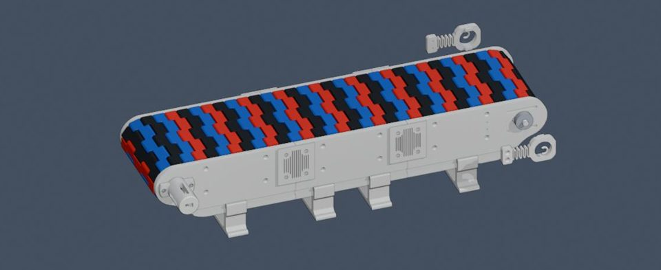

Banda modular de 111 mm
Diseñada, impresa en 3D, armada, probada y funcionando.
Armada, probada y funcionando



1. Cómo funciona
Un motorreductor N20 de 6 V gira la rueda motriz, que arrastra la cadena de eslabones. El otro extremo tiene un rodillo libre con tensores ajustables. El ESP32 lo controla con el puente H TC1508A: la potencia es un PWM y el sentido de giro se invierte intercambiando cuál pin está activo. Ver conexiones y la protección por pérdida de comunicación.
2. Materiales
| Cant. | Componente | Uso |
|---|---|---|
| 101 | Piezas impresas en PLA (29 tipos) | Chasis, rodillos, ejes, tensores y eslabones |
| 68 | Eslabón nivelado | 23 negros, 23 azules y 22 rojos |
| 4 | Rodamiento 627ZZ · 7 × 22 × 7 mm | Apoyo de los ejes |
| 1 | Motorreductor N20 · 6 V · 100 rpm | Accionamiento |
| 24 | Tornillo M3 × 20 | Guías a paredes |
| 6 | Tornillo M3 × 12 | Tensores (4) y soporte del motor (2) |
| 16 | Tornillo M4 × 20 | Conectores laterales |
Los tornillos roscan directo en los barrenos de PLA: no se usan tuercas. Impresión recomendada: PLA, capa 0.20 mm, 3 paredes, relleno 20–25 %.
3. Ensamblaje en 6 etapas

1 · Presentar el chasis
Paredes N y P, guías, conectores y patas. Las paredes quedan paralelas y las guías miran hacia la cadena.
2 · Presentar los rodillos
Rueda motriz del lado del motor y rodillo libre del lado del tensor, con sus agujeros alineados.

3 · Ejes y después baleros
Se insertan los ejes, los muñones y los cuatro 627ZZ, presionando siempre sobre el aro exterior.
4 · Soporte y motor
El motor N20, desconectado, entra en su soporte y su eje D engrana con el acoplamiento.

5 · Ensamblar la cadena
Primero se prueban dos o tres eslabones. Después se alternan negro, azul y rojo y se cierra la cadena.

6 · Tensores y ajuste
Se colocan al final. Se gira la banda a mano varias vueltas y solo entonces se prueba con 6 V.
Imágenes de la animación de montaje hecha en Blender a partir del modelo de Fusion.
4. Verificación final
- La cadena está centrada y los eslabones articulan sin grietas.
- Los cuatro rodamientos giran sin rozar sus alojamientos.
- Los rodillos están alineados y la cadena no salta.
- El soporte del motor está firme y las puntas de los tornillos no interfieren.
- El tensor conserva margen y la cadena gira varias vueltas a mano.
- El cableado queda lejos de la cadena y la fuente es de 6 V.
5. Resultado de la validación
La banda fue armada siguiendo esta guía y probada por el equipo el 20 de noviembre de 2026. Funciona correctamente y transporta carga real.
- Motor N20 a 6 V DC: funcionamiento correcto.
- Cadena de 68 eslabones y cuatro rodamientos 627ZZ girando sin roce.
- Transporte de carga real (lata y caja) comprobado.
Recomendaciones de uso
- Alimenta el motor con 6 V DC y no lo excedas. El puente H TC1508A admite como máximo 7.2 V.
- Antes de cada uso, gira la banda una vuelta a mano con el motor desconectado.
- Revisa de vez en cuando el tensor, los eslabones y los tornillos que roscan en PLA.
- La interfaz regula la banda por potencia (PWM). Sin encoder, la velocidad real depende de la carga y de la alimentación.
6. Archivos de diseño
| STL para imprimir | 29 tipos de pieza, 101 piezas en total. Abrir carpeta de STL |
| Cantidades | Cuántas copias imprimir de cada pieza (eslabón nivelado ×68). Cantidades_STL.csv |
| Modelo de Fusion | Con el eslabón nivelado. Banda_111mm_eslabones_nivelados.f3d (17 MB) |
Impresión: PLA, capa de 0.20 mm, 3 paredes y relleno de 20 a 25 %. Imprime primero tres eslabones para comprobar el giro. Después sigue la guía de ensamblaje de más arriba.
Los diseños originales en los que se basa esta banda están reconocidos en Origen.